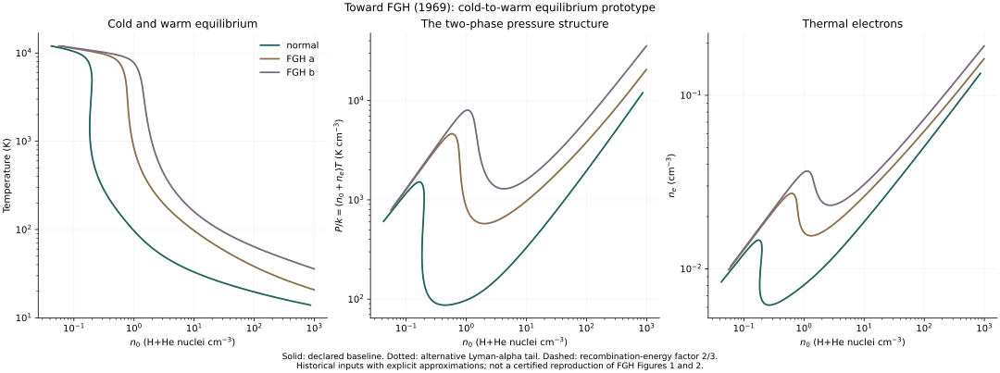
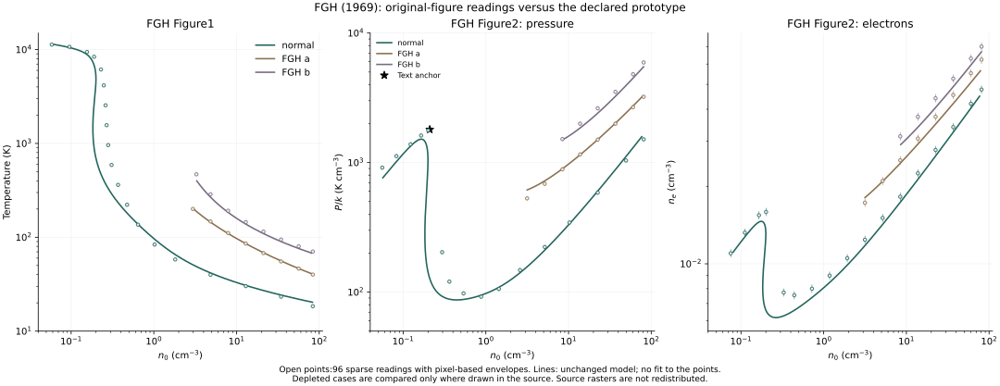

Chapter 02 / FGH & GHF 1969 / Equilibrium prototype
Connect the cold
and warm phases.
The defining result of the FGH model is a pressure curve that turns back on itself. A common pressure can support widely separated equilibrium temperatures and densities. Here the historical ingredients finally enter a coupled cold-to-warm calculation.
Prototype, with 48 numerical checks. This calculation produces the two-phase pressure structure, but it is not yet a quantitatively validated reproduction of FGH Figures 1 and 2. The hydrogen excitation fit and several historical conventions remain unresolved.
Three abundance cases, one coupled calculation.



The pressure maximum and minimum identify an interval in which a horizontal pressure line intersects multiple equilibria. This is the structure needed for cold and warm phases to coexist in pressure balance. It does not by itself select the pressure of a stationary conductive interface or prove dynamical stability when ionization evolves.
The plotted domain is restricted to 10–12,000 K and 0.01–1,000 cm⁻³. Temperatures without a density bracket are omitted and counted in the report. Temperature parameterization retains folds in T(n), rather than selecting one root and drawing across a missing branch.
Original-figure comparison / Historical validation deferred
Measure the mismatch, then keep the stopping point explicit.
We read 96 isolated points from FGH Figures 1 and 2 and checked their placement on the source curves. The comparison uses the unchanged prototype; no coefficient was fitted to these readings. Further recovery of the historical coefficients is deferred until specific new evidence becomes available.



The refined normal-abundance warm pressure maximum is 1,516.7 K cm⁻³, compared with the text’s approximately 1,800 K cm⁻³: a −15.7% difference. The corresponding model density is 0.1656 cm⁻³ versus 0.21, and temperature 8,417 K versus 7,800. Near the rapid transition, the largest sampled pressure discrepancy at fixed density is 1.10 dex. The entire figure therefore cannot be described as agreeing within 16%.
Figure 1 is scored as density at the reference temperature, avoiding arbitrary branch selection near a nearly vertical curve. Figure 2 is scored as pressure or electron density at the reference density, only where there is a unique model temperature root. All candidates would be retained for ambiguous cases; none of these sampled points is unscored. The report gives separate signed and RMS log residuals for each case and quantity; the metrics must not be pooled.
The FGH Figure 1 caption assumes a transition from depleted cases a/b to normal abundances near n ≈ 1 cm⁻³. The earlier full-domain constant-depletion model curves are extensions, including warm branches absent from the original figure.
What the coefficient audit resolved.
GHF Table 1, the equation (13) heating coefficients, and the Field et al. (1968) abundance baseline were visually rechecked. No transcription error was found in these inputs. The earlier Fe cascade discussion also cautions against adding extra lower-level population factors to coefficients that describe total excitation losses.
At the text’s n = 0.21 cm⁻³, T = 7,800 K point, the implemented cooling is 1.171 times the heating. Si II supplies about 31.4% of model cooling and the O I 22,500-K term about 18.0%. The downloadable report separates every heating and cooling contribution.
One-term sensitivity probes do not identify a correction: halving or doubling thermal Lyman-alpha cooling shifts the warm pressure maximum by only about +1.6% or −1.9%; applying the printed GHF 2/3 recombination-energy factor shifts it by less than 1%. These are diagnostics, not recovered cross sections, uncertainty bounds, or alternative fits to the original curve.
Stopping note: the original excitation fit, thermal He processes, recombination convention, and exact historical implementation remain unresolved. The prototype and measured discrepancies are preserved. We will resume historical coefficient recovery if a missing fit, original code, or other discriminating source becomes available.
Recompute this comparison.
Keep the seven prototype files listed below, then add these three files beside them. The source PDF is unnecessary to rerun the comparison; its hash, render coordinates, and calibration are recorded in the configuration.
.venv/bin/python compare.pyThe comparison passes 80 checks of calibration, numerical roots, scan refinement, model consistency, and energy budgets. These checks do not certify agreement with the historical figures. No independent second digitization has yet been made.
What changed from the reduced cold branch?
The solver now includes cosmic-ray production and removal of 20-eV superthermal electrons, secondary hydrogen ionization, thermal hydrogen excitation and ionization, and direct electron heating. These interact with H/He recombination, charge neutrality, historical metal cooling, and free-free emission.
= nfast[n(H I)(q′ion + q′ex) + neq′ee]
Γindirect = nfast[3.2 × 10⁻¹⁹ n(H I) + 4.1 × 10⁻¹⁷ ne]
These follow GHF equations (13) and (20). Heating is evaluated directly from the superthermal population, with ζ = 4 × 10⁻¹⁶ s⁻¹. The closure uses the printed H/He charge balance, without added metal-donor electrons. The earlier primary-only cold-branch calculation remains available to inspect that approximation separately.
The atomic-data gap is explicit.
GHF p. 178 prints the hydrogen ionization triangle: threshold 13.6 eV, peak cross section 1.2 × 10⁻¹⁶ cm² at 50 eV, and zero at 300 eV. Its Maxwellian average is integrated analytically and checked against independent numerical quadrature.
The same page does not print the complete Lyman-alpha fit, referring instead to Fite, Stebbings & Brackmann (1959) and Goldsmith’s Berkeley thesis (1969). We infer the excitation cross section at 20 eV from rounded equations (12)–(13), after subtracting the explicit ionization contribution. A linear rise from the 10.2-eV threshold is an assumption; it has not been validated against those data.
Two alternative tails beyond 20 eV change the calculated density at fixed temperature by at most about 0.13% over the sampled roots. That small sensitivity does not validate the assumed threshold slope or its normalization. The separate recombination-energy convention test changes density by at most about 0.65%.
Thermal He excitation and ionization are omitted. He I recombination uses the hydrogen approximation; metal cooling uses a low-density sum without level statistical equilibrium. The full list is in the configuration and limitations. The figure uses historical inputs with these declared approximations; it does not substitute a modern KI or Wolfire cooling fit.
Run and inspect the calculation.
Save these seven files together. The calculation needs no PDF or network access once its pinned dependencies are installed.
python3 -m venv .venv
.venv/bin/python -m pip install -r requirements.txt
.venv/bin/python two_phase.pyThe 48 checks cover Maxwellian integration, charge balance, superthermal production/removal, H/He ionization, thermal-electron balance, thermal balance, and root-scan refinement. All three cases retain a negative-slope pressure segment. Source hashes, sampled turning-point brackets, sensitivity measurements, and runtime versions are recorded in the report. Numerical checks validate the implementation under its assumptions; they do not certify historical accuracy.
Historical validation remains open.
The sparse original-figure comparison above is complete. Further coefficient recovery is deferred; the original excitation fit, recombination convention, omitted processes, and historical implementation remain to be resolved. The source audit also keeps the different depletion values printed in FGH and GHF separate.
Field, Goldsmith & Habing (1969): target figures ↗
Goldsmith, Habing & Field (1969): detailed equations ↗
Code, explanatory text, and generated-data licenses remain unselected. Original paper rights are separate.
A bounded ZP saturation search.
This supplementary calculation uses the existing approximate FGH/GHF model with instantaneous ionization equilibrium, P/kB = (n0 + ne)T, and an explicitly assumed neutral-gas conductivity κ = 2500√T. It is not a recovery of historical FGH saturation values. The depleted warm branches remain model extensions beyond the source’s cold-side depletion prescription.
For normal abundances, 13 sampled pressures between 608.68 and 1471.19 K cm⁻³ have three equilibrium roots within 10–12,000 K, but the conductivity-weighted integral remains positive (normalized range 0.196–0.997). No sign bracket was found. Psat is left unavailable; this finite search does not rule out a root elsewhere or between unsampled points.
FGH a prototype extension: conditional Psat/kB = 1995.67 K cm⁻³. Cold endpoint: 54.825 K, n0 = 36.359075 cm⁻³; intermediate intersection: 2446.235 K, n0 = 0.794931 cm⁻³; warm endpoint: 10597.124 K, n0 = 0.171808 cm⁻³. These are conditional model results, not historical reproductions.
FGH b prototype extension: conditional Psat/kB = 3733.32 K cm⁻³. Cold endpoint: 81.410 K, n0 = 45.805172 cm⁻³; intermediate intersection: 2373.899 K, n0 = 1.543503 cm⁻³; warm endpoint: 10063.616 K, n0 = 0.347658 cm⁻³. These are conditional model results, not historical reproductions.
Here n0 counts H+He nuclei, nH = 0.9 n0, and the pressure includes electrons. The downloadable results also record ne and hydrogen-nucleus density. These numbers cannot be compared directly with a pure-H density column without retaining the convention. Finite-grid pressure searches, refined quadrature, root thermal balance and a nonnegative static-front flux-square integral are checked. Remaining input uncertainties dominate numerical precision.